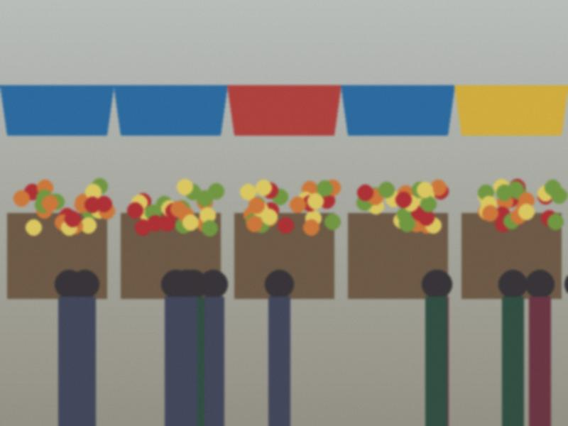

Archive for the ‘Jam’ Category

Pickles with Viktor Ivanovich's method
Cucumbers from the bazaar, the small ones are the best. I read the pickle recipe on the blog of Viktor Ivanovich from…
♥ 127 · 1 comments
Apricot jam, the slow way
From the Iyık Janyl road, three buckets. 5 kg apricots, stones out. 4 kg sugar. Layers in the basin, leave overnight.…
♥ 138 · 1 comments